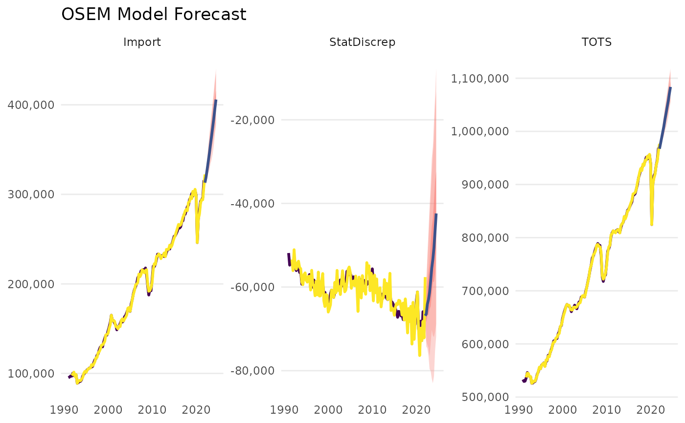
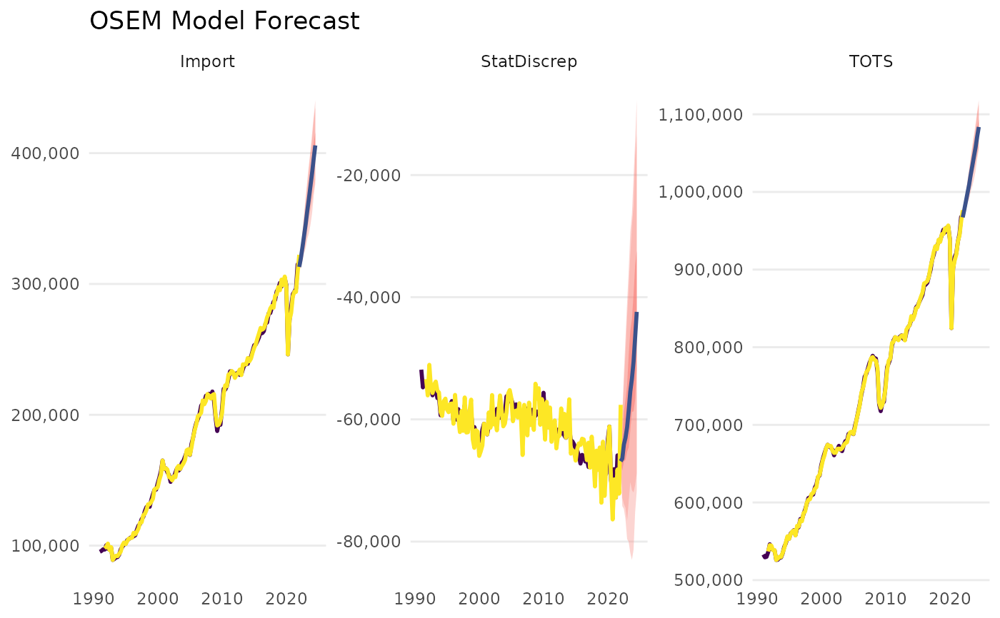
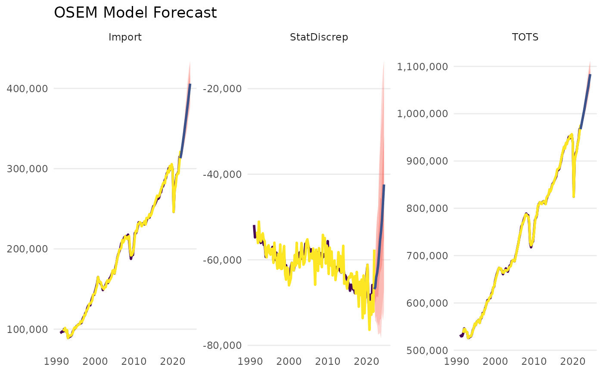
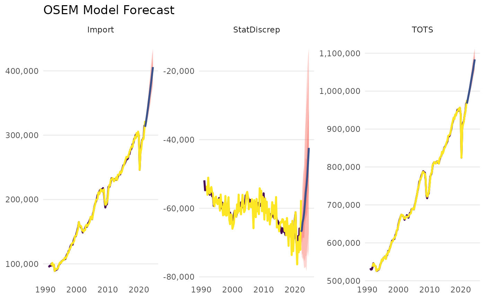

Forecast OSEM model
forecast_model.RdForecast OSEM model
Usage
forecast_model(
model,
exog_predictions = NULL,
n.ahead = 10,
ci.levels = c(0.5, 0.66, 0.95),
exog_fill_method = "AR",
ar.fill.max = 4,
plot = TRUE,
uncertainty_sample = 100,
quiet = FALSE
)Arguments
- model
A model object of class 'osem'.
- exog_predictions
A data.frame or tibble with values for the exogenous values. The number of rows of this data must be equal to n.ahead.
- n.ahead
Periods to forecast ahead
- ci.levels
Numeric vector. Vector with confidence intervals to be calculated. Default: c(0.5,0.66,0.95)
- exog_fill_method
Character, either 'AR', 'auto', or 'last'. When no exogenous values have been provided, these must be inferred. When option 'exog_fill_method = "AR"' then an autoregressive model is used to further forecast the exogenous values. With 'last', simply the last available value is used. 'auto' is an
auto.arimamodel.- ar.fill.max
Integer. When no exogenous values have been provided, these must be inferred. If option 'exog_fill_method = "AR"' then an autoregressive model is used to further forecast the exogenous values. This options determines the number of AR terms that should be used. Default is 4.
- plot
Logical. Should the result be plotted? Default is TRUE.
- uncertainty_sample
Integer. Number of draws to be made for the error bars. Default is 100.
- quiet
Logical. Should messages about the forecast procedure be suppressed?
Value
A list of class 'osem.forecast' with the following elements:
- forecast
A tibble with the forecasted values for each module.
- orig_model
The original model object of class 'osem'.
- dictionary
The dictionary used for the model.
- exog_data
A tibble with the exogenous data used for the forecast.
- exog_data_nowcast
A tibble with the exogenous data used for the nowcasting.
- nowcast_data
A tibble with the nowcasted data.
- args
A list with the arguments used for the forecast.
- full_forecast_data
A tibble with the full forecast data, if available.
Examples
spec <- dplyr::tibble(
type = c(
"d",
"d",
"n"
),
dependent = c(
"StatDiscrep",
"TOTS",
"Import"
),
independent = c(
"TOTS - FinConsExpHH - FinConsExpGov - GCapitalForm - Export",
"GValueAdd + Import",
"FinConsExpHH + GCapitalForm"
)
)
# \donttest{
a <- run_model(specification = spec)
#> Table namq_10_a10 cached at /tmp/RtmpzOCInM/eurostat/b1a6002baab7fb27796d86df4c53dad9.rds
#> Table namq_10_gdp cached at /tmp/RtmpzOCInM/eurostat/c6c39fa9ea0f07bf8f64918ffb8ff05f.rds
#>
#> --- Estimation begins ---
#> Estimating Import = FinConsExpHH + GCapitalForm
#> Constructing TOTS = GValueAdd + Import
#> Constructing StatDiscrep = TOTS - FinConsExpHH - FinConsExpGov - GCapitalForm - Export
 forecast_model(a)
#> No exogenous values provided. Model will forecast the exogenous values with an AR4 process (incl. Q dummies, IIS and SIS w 't.pval = 0.001').
#> Alternative is exog_fill_method = 'last'.

forecast_model(a)
#> No exogenous values provided. Model will forecast the exogenous values with an AR4 process (incl. Q dummies, IIS and SIS w 't.pval = 0.001').
#> Alternative is exog_fill_method = 'last'.

 #> OSEM Model Forecast Output
#> -----------------------
#>
#> Forecast Overview:
#> Forecast Horizon: 2022-04-01 to 2024-07-01
#> Forecast Method: AR Model (Outlier and Step Shift Corrected)
#> Max AR Length: 4
#>
#> Central Forecast Estimates:
#> # A tibble: 10 × 4
#> Date Import TOTS StatDiscrep
#> 1 2022-04-01 319475. 977166. -66441.
#> 2 2022-07-01 327867. 987988. -64115.
#> 3 2022-10-01 336773. 998887. -63027.
#> 4 2023-01-01 345730. 1009511. -61281.
#> 5 2023-04-01 355711. 1022435. -58539.
#> 6 2023-07-01 364916. 1033919. -55441.
#> 7 2023-10-01 374874. 1045876. -53352.
#> 8 2024-01-01 384809. 1057423. -50562.
#> 9 2024-04-01 395808. 1071344. -46592.
#> 10 2024-07-01 405887. 1083701. -42401.

# }
#> OSEM Model Forecast Output
#> -----------------------
#>
#> Forecast Overview:
#> Forecast Horizon: 2022-04-01 to 2024-07-01
#> Forecast Method: AR Model (Outlier and Step Shift Corrected)
#> Max AR Length: 4
#>
#> Central Forecast Estimates:
#> # A tibble: 10 × 4
#> Date Import TOTS StatDiscrep
#> 1 2022-04-01 319475. 977166. -66441.
#> 2 2022-07-01 327867. 987988. -64115.
#> 3 2022-10-01 336773. 998887. -63027.
#> 4 2023-01-01 345730. 1009511. -61281.
#> 5 2023-04-01 355711. 1022435. -58539.
#> 6 2023-07-01 364916. 1033919. -55441.
#> 7 2023-10-01 374874. 1045876. -53352.
#> 8 2024-01-01 384809. 1057423. -50562.
#> 9 2024-04-01 395808. 1071344. -46592.
#> 10 2024-07-01 405887. 1083701. -42401.

# }